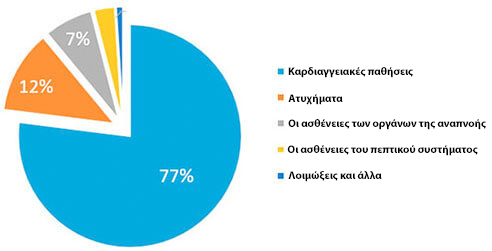
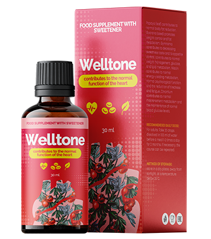

Στατιστικά: Κάθε 3ης πολίτης άνω των 35 ετών πεθαίνει από ασθένειες που προκαλούνται από την υπέρταση!
Β. Σταθόπουλος :Εγώ προσωπικά 2020 θα στείλω στους πρώτους μου αναγνώστες το σκεύασμα για υπέρταση με έκπτωση 50%

Ο διάσημος καρδιοχειρουργός, ο διοργανωτής της ιατρικής επιστήμης, ο καθηγητής.
Οι καρδιαγγειακές παθήσεις - είναι οι παγκόσμιοι ηγέτες μεταξύ των ασθενειών από τον αριθμό των ζωών που παίρνουν. Οι 94% των καρδιακών προσβολών και των εγκεφαλικών επεισοδίων συμβαίνουν ακριβώς λόγω της αυξημένης πίεσης. Στο 89% των περιπτώσεων η υπέρταση με έμφραγμα και εγκεφαλικό επεισόδιο τελειώνει με μοιραίες συνέπειες. Αν μιλάμε για τις συγκεκριμένες σημασίες , τότε η υπέρταση είναι η αιτία περίπου των 77-78% θανατηφόρων "φυσικών" περιπτώσεων . Σε απόλυτους αριθμούς είναι περίπου 1,54 εκατομμύρια θανάτους το 2016.
“ΟΙ αιτίες θνησιμότητας το 2016”
Ιδιαίτερα τρομακτικό είναι το γεγονός ότι οι πολλοί άνθρωποι δεν υποψιάζονται ότι έχουν την υπέρταση. Σύμφωνα με την στατιστική, το 67% υπερτασικούς ασθενείς δεν συνειδητοποιούν ότι είναι άρρωστοι. Το γεγονός ότι οι πτώσεις της πίεσης κανείς δε με παίρνει στα σοβαρά, μέχρι η υπόθεση δεν θα φτάσει στο σημείο υπερτασικής κρίσης, όταν η πίεση είναι εκτός ορίων. Λίγοι δίνουν την προσοχή τους σε πονοκεφάλους, ζάλη, αδυναμία, οίδημα προσώπου, το γρήγορο αίσθημα των καρδιακών παλμών, θολή όραση, νευρικότητα. Εν τω μεταξύ, όλα αυτά τα συμπτώματα μιλούν για χρόνια πορεία της υπέρτασης. Και ότι πρέπει επειγόντως να ληφθούν μέτρα πριν να είναι πολύ αργά!
Μέχρι σήμερα υπάρχει μοναδικό σκεύασμα από την υπέρταση, η οποία επηρεάζει την αιτία της ασθένειας και εφόσον τηρούνται οι οδηγίες εντελώς απαλλάσσει από υπέρταση. Παραγωγός: Λετονία, ΕΕ. Το θέμα είναι ότι το "" εντελώς επαναφέρει την τόνωσή των αγγείων, χάρη στο μοναδικό επιστημονικό τύπο. Επίσης, το σκεύασμα αυτό μειώνει τη χοληστερόλη και ομαλοποιεί τον καρδιακό ρυθμό. Είναι πολύ σημαντικό, ότι "" δεν είναι μόνο αποτελεσματικό, αλλά και ασφαλή για την υγεία, επειδή αποτελείται αποκλειστικά από φυσικά συστατικά. Γι’ αυτό το λόγο, "" μπορεί να ληφθεί σε οποιαδήποτε ηλικία, χωρίς το φόβο των παρενεργειών και επιπλοκών από την πλευρά των άλλων οργάνων. Η αποτελεσματικότητα και η ασφάλεια του σκευάσματος έχει αποδειχθεί από πολλές κλινικές δοκιμές, στις οποίες συμμετείχαν πάνω από 5.000 άνθρωποι.
Πριν το "" δεν παραδίδανε σε όλες τις χώρες, παρά το γεγονός ότι εγώ προσωπικά έκανα πολλές διαπραγματεύσεις με τους κατασκευαστές. Αλλά τώρα, επιτέλους, "" μπορείτε να αγοράσετε και στη χώρα μας.
Πάρθηκε απόφαση για την ακύρωση των κυρώσεων για την εισαγωγή των ευρωπαϊκών προϊόντων κατά της υπέρτασης.

— Καλημέρα, κα Σταυράκη. Πείτε μου, σας παρακαλώ, γιατί πάρθηκε αυτή τη απόφαση ;
— Το κύριο καθήκον μας - είναι να διατηρήσουμε την υγεία του πληθυσμού σε όλο τον πλανήτη. Και αν κάπου υπάρχει πρόβλημα, θα πρέπει απαραίτητα να το λύσουμε. Δυστυχώς, από την χώρα μας ήρθε μια θλιβερή στατιστική: πάνω από το 70% των κατοίκων υποφέρουν από υπέρταση, και σχεδόν κάθε τρίτος πεθαίνει από καρδιαγγειακά νοσήματα. Το ποσοστό αυτό είναι κατά πολλές φορές μεγαλύτερο από τον επίπεδο των άλλων ευρωπαϊκών χώρων.
— Είναι, πραγματικά, τρομεροί οι αριθμοί! Πείτε μου, παρακαλώ, πως με το πρόβλημα της υπέρτασης αγωνίζονται στης χώρες Ευρωπαϊκής Ένωσης;
— Επί του παρόντος σε όλες τις ευρωπαϊκές κλινικές και κέντρα αποκατάστασης προέρχεται το καινοτόμο προϊόν το "", που αναπτύχθηκε από Γερμανούς επιστήμονες. Ένα χαρακτηριστικό του "" είναι, ότι δεν έχει αντενδείξεις και αναζωογονεί τα αγγεία σε κυτταρικό επίπεδο. Αυτό το σας επιτρέπει να γίνει γρήγορα την ομαλοποίηση της αρτηριακής πίεσης και να γίνει την πρόληψη της ανάπτυξης καρδιαγγειακών παθήσεων.

— Η κα Σταυράκη , είναι η αλήθεια ότι αυτό το προϊόν είναι ήδη διαθέσιμο σε εμάς;
— Ναι, αυτό ακριβώς εννοώ όταν λέω για την προσωρινή ακύρωση των κυρώσεων για την εισαγωγή των ευρωπαϊκών προϊόντων κατά της υπέρτασης. Αυτή τη απόφαση ελήφθη στη σύνοδο κορυφής και είχε συμφωνηθεί. Όταν μιλάμε για την υγεία του πληθυσμού, για πολιτικές διαφορές δεν υπάρχει ο λόγος.
— Πείτε πως το "" επηρεάζει τον οργανισμό;
— Με βάση τα αποτελέσματα της έρευνας του Παγκόσμιου οργανισμού υγείας, το σκεύασμα "" έχει τα ακόλουθα αποτελέσματα:
- • οδηγεί σε τόνωση τα αιμοφόρα αγγεία
- • μειώνει τα επίπεδα χοληστερόλης
- • ομαλοποιεί τον καρδιακό ρυθμό.
Αυτή τη στιγμή έχουμε τα παρακάτω στατιστικά στοιχεία:
- – κατά τη διάρκεια πρόληψης των καρδιαγγειακών παθήσεων σε άτομα ηλικίας άνω των 35 ετών, χρησιμοποιώντας το προϊόν έχουμε σηματοδοτήσει την ομαλοποίηση της αρτηριακής πίεσης σε 97% των ερωτηθέντων;
- – Στο διορισμό του σκευάσματος "" σε περίοδο της ανάκαμψης μετά από τις περασμένες υπερτασικές κρίσεις, η βελτίωση της ροής του αίματος των αγγείων του εγκεφάλου παρατηρήθηκε σε 86% άτομα.
— Η κα Σταυράκη, σας ευχαριστώ πολύ για τη συνέντευξη! Είναι, πραγματικά, μεγάλη είδηση για όλους τους κατοίκους. Ας ελπίσουμε ότι τώρα θα μπορέσουμε να αντιμετωπίσουμε την υπέρταση και να αυξήσουμε τη μέση διάρκεια ζωής των Ελλήνων.
Σχόλια